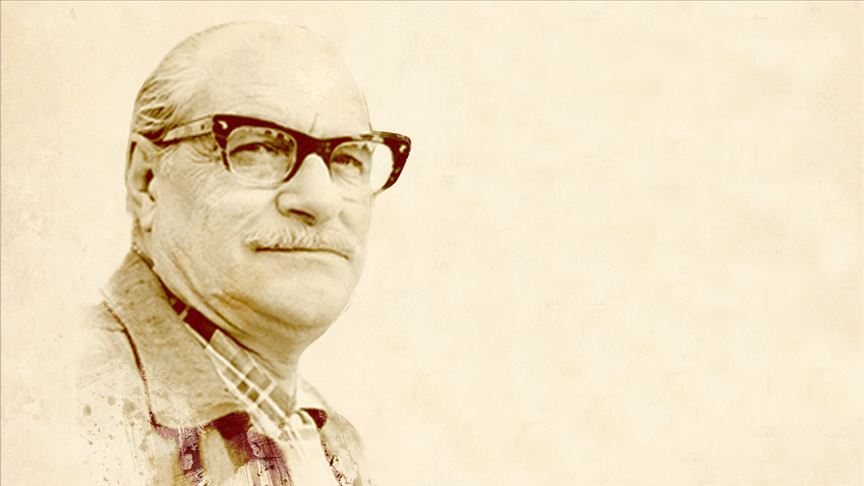

“Gerçek yazar, kendi toplumunun aynasıdır.” – Kemal Tahir
Biyografi
Kemal Tahir (1910 – 1973), Türk edebiyatının toplumcu gerçekçi akımının en önemli yazarlarından biridir. Romanlarında tarih, sosyoloji ve Anadolu insanının iç dünyasını ustalıkla harmanlamıştır.
Hapishane yıllarında tanıdığı Anadolu insanının yaşamını, adalet, toplum yapısı ve Batılılaşma konularını derinlemesine ele alarak Türk romanına yeni bir boyut kazandırmıştır.
En bilinen eserleri arasında Yorgun Savaşçı, Devlet Ana ve Kurt Kanunu yer almaktadır.
Eserleri
Esir Şehrin İnsanları (1956)
Yorgun Savaşçı (1965)
Devlet Ana (1967)
Kurt Kanunu (1969)
Bozkırdaki Çekirdek (1972)